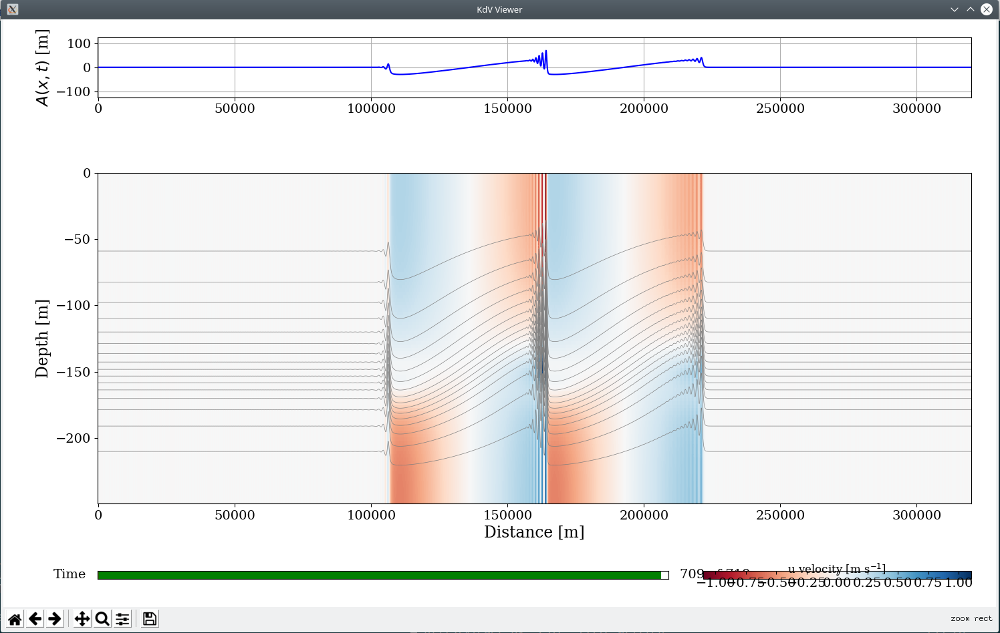

This page contains links to various resources for modelling and analysing oceanographic observations to understand internal waves.
Internal Wave Climatology
We have created an internal tide climatological atlas for northern Australia using output from a 3D hydrostatic ocean model - SUNTANS. Ocean state variables (currently only density) were decomposed into tidal harmonic consituents and vertical normal modes to provide succinct maps of the internal tide amplitude for different time periods.
Documentation
Currently, there is a presentation describing the methodology that I gave at the Australian Coastal Ocean Modelling and Observation workshop in Canberra, October 2018.
Download
- Gridded climatological atlas netcdf file (~3GB)
- GIS imagery of the semidiurnal, mode-one amplitude geotiff files
Scripts [under construction]
- Some example notebooks for viewing the data and making predictions are on github
Weakly nonlinear internal wave (KdV) solver
Code for calculating numerical solutions to the Korteweg - de Vries (KdV) equation for internal gravity waves in a continuously stratified fluid is available on bitbucket.

Code
Ocean Modelling
I have developed several tools for the pre/post-processing of numerical model and oceanographic measurment data. The majority of these are written in python and are hosted on either github or bitbucket. This includes:
- Python oceanographic data analysis toolbox SODA
- SUNTANS ocean model github page
- There is some documentation for setting up SUNTANS with python here